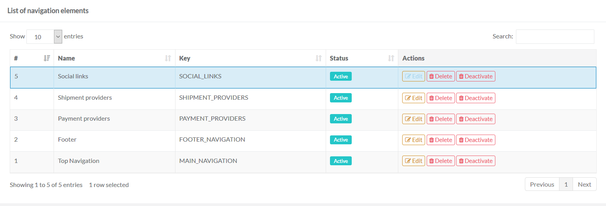
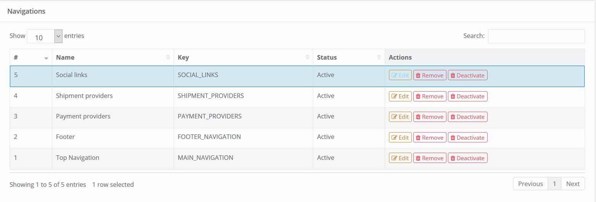
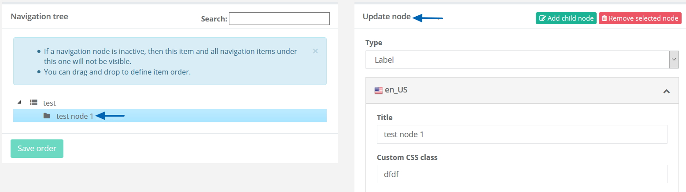
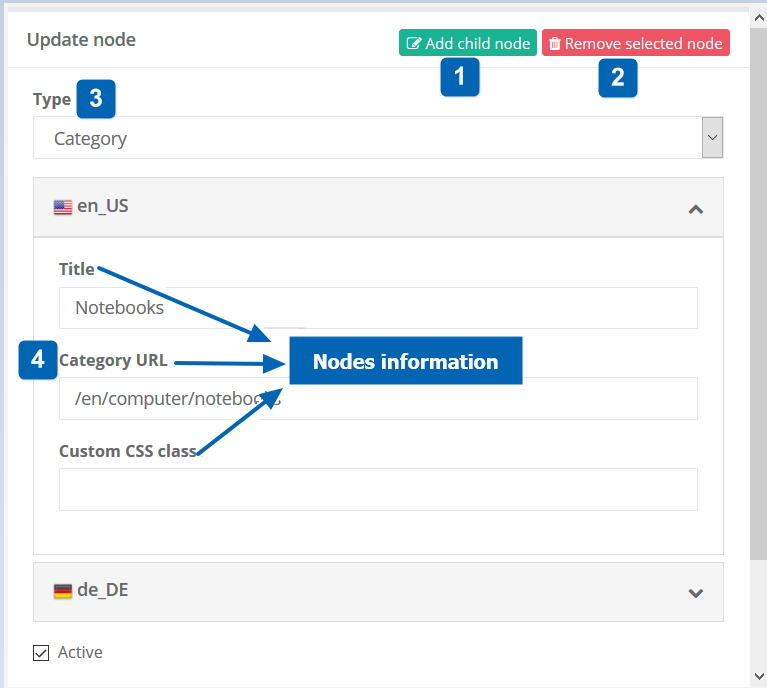
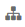
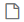
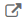
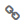
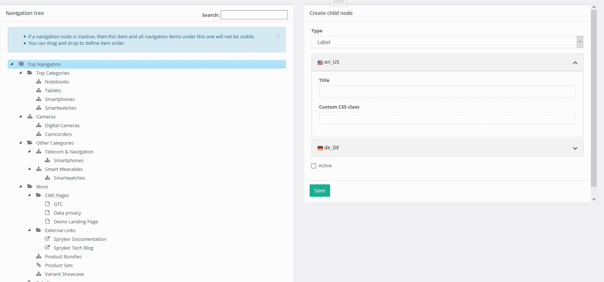

Creating and Managing a Navigation Tree
The following section describes how to add and manage a new navigation element and its nodes.
Creating a New Navigation
To create a new navigation element:
Go to the Navigation section and click Create Navigation button.
Specify the following:
- Name - give your navigation tree a name
- Key - specify the navigation key. The key is used to reference the navigation from Yves
- Check the Active checkbox if you want to make the navigation item active, or leave it unchecked if you want to have it inactive. If a navigation item is inactive, then this element and all its nodes will not be visible.
Managing Navigation Elements
The “Navigation” list displays all the elements in your system. Here you can see their status and if they are active or not, as well as modify, activate or deactivate, as well as entirely delete them.

You can also search for a navigation element by starting to type its name or key in the Search field. As you type, the list of found navigation elements with the matching values in Name and Key fields will be created in the List of navigation elements table.

Creating a Child Node
To create a child node to an existing navigation element, click on the navigation element in the List of navigation elements table to select the element and add the relevant information in the Create child node frame.

After saving your node the view will be updated and instead of Create child node frame now you should be able to see Update node frame. The newly added node now should appear in your navigation tree.

Managing Navigation Nodes
You can add child nodes to the existing nodes as well as edit the nodes or deactivate them if you don’t want the child nodes to be visible.
To manage an individual navigation node, click on it to select. Once it’s selected in the Update node frame you will see all the details of the node.

In the table below, you will find descriptions of the screen elements by their number:
| # | Element | Description |
| 1 | Add the child node | Click this button to create a child node. |
| 2 | Remove selected node | Select this action to completely remove the node. Please be cautious when doing so. These action cannot be reversed. Deleting a node will delete the selected node as well as the nodes below it. However you should be aware that if you have links to categories, CMS pages and so on, those will not be affected. |
| 3 | Types | Types of navigation nodes. See Navigation Node Types and Their Information section below for more information. |
| 4 | Attributes | Depending on the type of the node there are various node related attributes that can be managed. See Navigation Node Types and Their Information section below for more information. |
Navigation Node Types and Their Information
Navigation nodes can be of different types:
-
 Labels do not link to any specific URL, they are used for grouping other items accessed from the menu.
Labels do not link to any specific URL, they are used for grouping other items accessed from the menu. - Category is used to link an existing category you have to the navigation node.
- CMS page can be assigned to a node.
- External URL (typically opened in a new tab).
- Link to internal pages, i.e. login, registration, etc.
Depending on the type of the node there is various node related information that can be managed:
Localized title (all types of nodes): This is the name of the node exactly how it will be displayed in the store (for example if you link a category to your node, the node name can be even different from the name of the category).
Localized custom CSS class (all types of nodes): If the class is defined in the shop, then a correct class reference will define the look and feel of the node. This is also localised which means that for different locales you can have different appearance for the same node.
Active/not active (all types of nodes): If necessary you can also completely deactivate a node. Which will also make the node and nodes below it not be visible in your shop for as long as it’s inactive.
Localized category URL (only for “Category” type): When you are assigning a category to the node you can search with category name to select the correct category URL you want to assign. Keep in mind that this is also localised information, so for multiple locales you will need to make sure that you select same category for all locales. If your category has multiple parents in the category tree, the same category can have different URLs. In this case you will need to pick one of those URLs.
Localized CMS page URL (only for “CMS” type): When you are assigning a CMS page to the node you can search with CMS page name to select the correct CMS page URL you want to assign. Keep in mind that this is also localised information, so for multiple locales you will need to make sure that you select same CMS page for all locales.
Link (only for “internal URL” type): This is the relative path of your internal link. For example if you would like to link a login page with is under “/login”, then this is exactly what you will use as an input for the Link field.
External URL (only for “external URL” type): If you would like to link external URL to your nodes, you will use this field to define the absolute URL. This could be used for example to link say your corporate websites page in your shop. Unlike internal links the url of the external link should be absolute which means it needs to include the protocol as well as domain, e.g. https://mydomain.com/page
Viewing and Managing the Navigation Tree
Click on a navigation element in the Navigations table to view its nodes. See Creating a New Navigation section above for information on how to create and manage navigation nodes. If the navigation node is inactive, it will appear slightly different in the tree to indicate that the node and all nodes under it are currently not visible.
Reordering Nodes:
To reorder nodes, drag and drop elements in the tree. To keep the changes, click "Save order".
Node Search:
From the Navigation page enter a search term. The results are automatically highlighted in the navigation tree.

See also:
- Navigation Overview
- Graphic User Interface - Navigation
- Navigation
- Migration Guide - Navigation Module
- Migration Guide - NavigationGui Module
Last review date: Nov. 11th, 2017